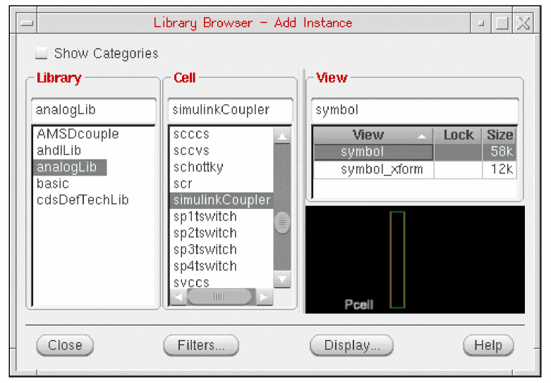
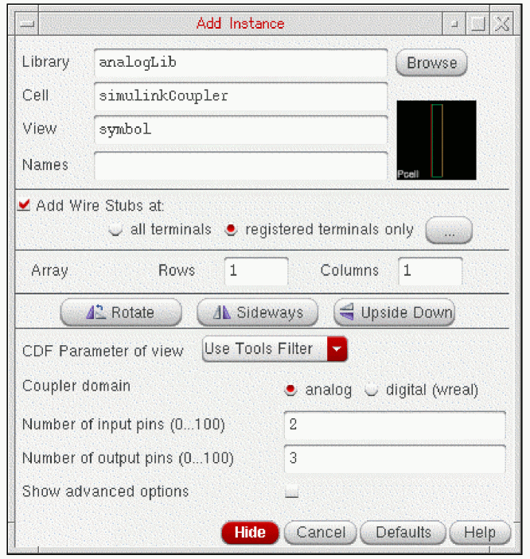
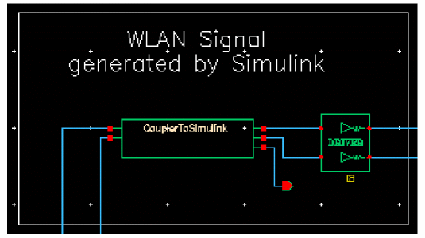
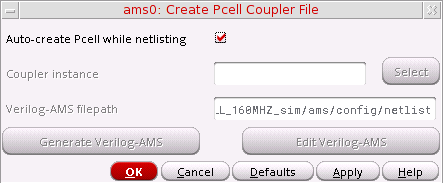
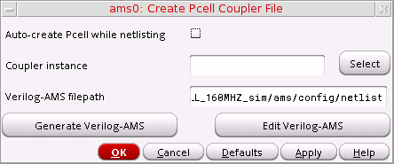
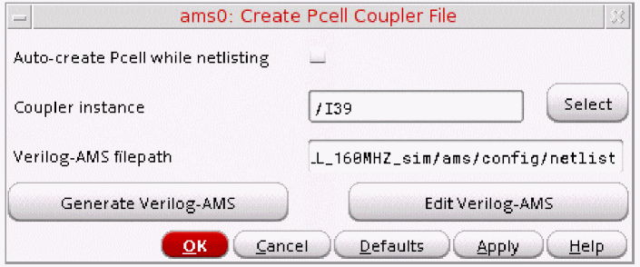

3
Running Cosimulation from ADE Using the simulinkCoupler
AMS-MATLAB/Simulink cosimulation stands for cosimulation using the Spectre AMS Designer simulator and The MathWorks MATLAB®/Simulink®. ADE stands for the Virtuoso Analog Design Environment.
Use IC 6.1.3, IUS 8.1 or later, and MATLAB704R14 or MATLAB R2007b or MATLAB R2008a for this tutorial. The estimated time to complete this tutorial is about one hour.
The simulinkCoupler is a parameterized cell (
To run cosimulation from ADE using the simulinkCoupler block from the Cadence analogLib library, do the following:
- Replace the coupler_2_3_a block with the simulinkCoupler block.
- Specify automatic generation of the Verilog-AMS module.
- Run cosimulation by starting two simulations separately.
Replacing the coupler_2_3_a with the simulinkCoupler
To replace the coupler_2_3_a coupler block on the Virtuoso schematic with the simulinkCoupler block from the Cadence analogLib Library, do the following:
- In the schematic window, click the coupler_2_3_a instance and press Delete.
-
Type
ito open the Add Instance form. - Click Browse to open the Library Browser.
- In the Library column, select analogLib.
-
In the Cell column, scroll down and select simulinkCoupler.
 -
On the Add Instance form, change the number of input pins to 2 and the number of output pins to 3 as follows:
 -
In the schematic window, place the
simulinkCouplerinstance.
 - Choose File – Check and Save.
Specifying Automatic Generation of the Verilog-AMS Module
To specify automatic generation of a Verilog-AMS module for the simulinkCoupler block, do the following:
-
In ADE, choose Setup – MATLAB/Simulink – Create Pcell coupler file.
The Create Pcell Coupler File form appears.
 -
Verify that Auto-create Pcell while netlisting is turned on.
When Auto-create Pcell while netlisting is turned on, ADE generates the Verilog-AMS module automatically. -
Click OK.
You are ready to run cosimulation by starting two simulations separately.
Viewing and Modifying the Verilog-AMS Module
To view and modify the Verilog-AMS module for the simulinkCoupler that ADE generates, do the following:
- In ADE, choose Setup – MATLAB/Simulink – Create Pcell coupler file.
-
On the Create Pcell Coupler File form, turn off Auto-create Pcell while netlisting.
 -
Click Select twice.
The RF Transmitter System Testbench schematic appears in the foreground. -
Select the CouplerToSimulink instance.
The instance name appears in the Coupler instance field on the Create Pcell Coupler File form.
 -
Click Generate Verilog-AMS to create the Verilog-AMS code for the Pcell coupler.
The following success message appears in the output area of the CIW:Generated Verilog-AMS file successfully.
-
On the Create Pcell Coupler File form, click Edit Verilog-AMS.
The Verilog-AMS code for thesimulinkCouplercell appears in a text editing window. - Quit the text editor window.
- (Optional) You can run cosimulation by starting two simulations separately.
- To exit Cadence software and MATLAB, choose File – Exit in the CIW.
Return to top